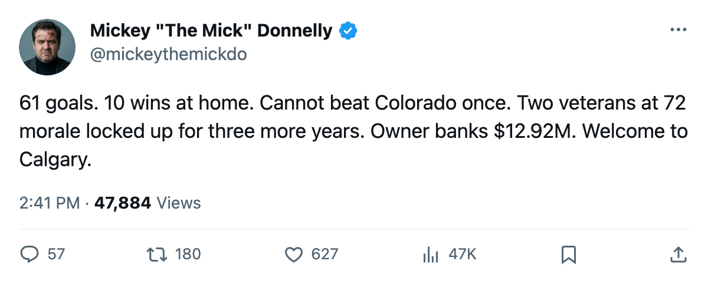
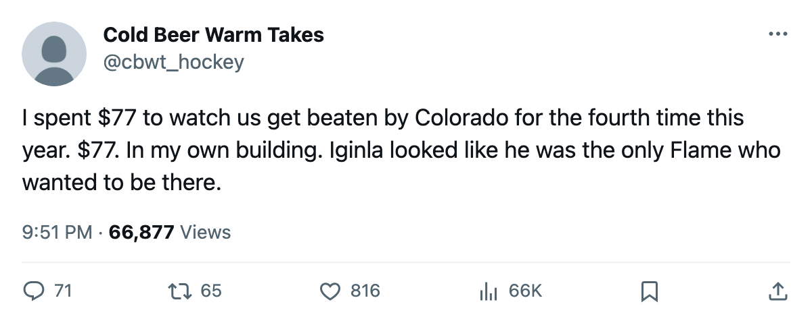

OWNED: CALGARY HAVE NOT BEATEN COLORADO ONCE, WON 10 GAMES AT HOME, AND BANKED $12.92 MILLION
The Richard Trophy winner puts up 61 goals for the worst home team in hockey. His two highest-paid teammates sit at 72 morale with 3 years left. The owner cashes the check.
 Mickey "The Mick" DonnellyColumnist, ex-goalie · The Penalty Box
Mickey "The Mick" DonnellyColumnist, ex-goalie · The Penalty Box
The piece
 Jarome Iginla94 has 61 goals and 103 points. He is the reigning Richard Trophy winner. And his club has won 10 games in front of its own people. Ten. In a building with 13,039 seats and $77 tickets. The worst home record in the league, and the man who owns it banked $12.92 million.
Jarome Iginla94 has 61 goals and 103 points. He is the reigning Richard Trophy winner. And his club has won 10 games in front of its own people. Ten. In a building with 13,039 seats and $77 tickets. The worst home record in the league, and the man who owns it banked $12.92 million.
 Calgary Flames are 22-40-6, 54 points. The fewest in hockey. They have not beaten
Calgary Flames are 22-40-6, 54 points. The fewest in hockey. They have not beaten  Colorado Avalanche this season: 0-4-1, the OTL in the fifth game only because the record keeps score differently than I keep grudges. Colorado has won here, Colorado has won there, Colorado has won at the 3-minute mark, Colorado has won whatever way it pleases. The series is over and Calgary never got a single regulation victory.
Colorado Avalanche this season: 0-4-1, the OTL in the fifth game only because the record keeps score differently than I keep grudges. Colorado has won here, Colorado has won there, Colorado has won at the 3-minute mark, Colorado has won whatever way it pleases. The series is over and Calgary never got a single regulation victory.
 Roman Turek86 is $4.40 million with 3 years left and his morale is 72.
Roman Turek86 is $4.40 million with 3 years left and his morale is 72.  Travis Green78 is $2.97 million with 3 years left and his morale is 72. Two of the eight most miserable men in hockey, locked up for three more winters each, and neither one can leave and neither one will cheer.
Travis Green78 is $2.97 million with 3 years left and his morale is 72. Two of the eight most miserable men in hockey, locked up for three more winters each, and neither one can leave and neither one will cheer.
The club average morale is 86.8. Fifth worst of 30. 13,039 a night won't move the bottom line, but it poisons the room. Ten wins at home in 34 tries means the crowd stopped showing up in December and nobody in the front office has a plan beyond banking.
$45.93 million in payroll. $57.37 million in revenue. $12.92 million in profit. $0.85M per point. The Saddledome is a cash machine that dispenses losses. The owner does not have to fire a soul. The owner does not have to move a man at what the calendar has as the trade deadline, 3 days out. The lottery is coming, the television money is coming, and the profit line says the operation is exactly what he wants it to be.
Iginla is 27 years old with a 89 overall and 103 points. He is in his prime. His team cannot beat its divisional rival once in five games. His team wins 10 at home in 34 tries. His two highest-paid teammates are tied for the lowest morale in the building and will be here for three more years of this. There is no deadline fix for a club this hollowed out, no rental that changes a 10-win home season, no coaching change that raises 72 to 86.
The gap between Calgary and 2nd place  Vancouver Canucks in the Northwest is 38 points. The gap between Calgary and 3rd place
Vancouver Canucks in the Northwest is 38 points. The gap between Calgary and 3rd place  Edmonton Oilers is 38 points. The gap between Calgary and 4th place
Edmonton Oilers is 38 points. The gap between Calgary and 4th place  Minnesota Wild is 9 points. They are 9 points from 4th and they cannot get there because they do not win at home, and they do not win at home because two men on long deals would rather be anywhere else.
Minnesota Wild is 9 points. They are 9 points from 4th and they cannot get there because they do not win at home, and they do not win at home because two men on long deals would rather be anywhere else.
Three days to the deadline. Nobody in Calgary is moving. Why would they? $12.92 million in the till, $77 tickets, 13,039 butts in the seats. The math works for the man with the checkbook. The math does not work for the man with the Richard Trophy.

